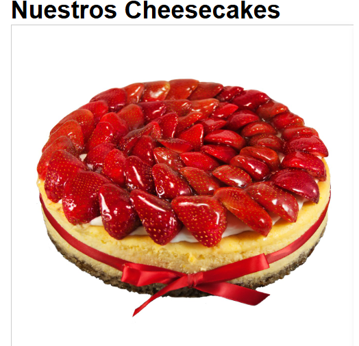
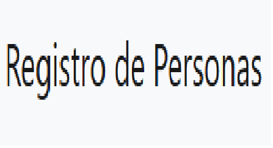
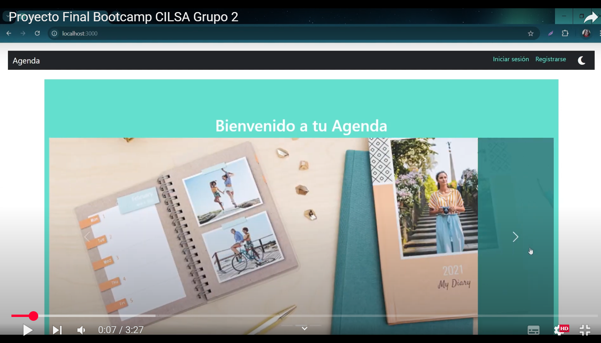
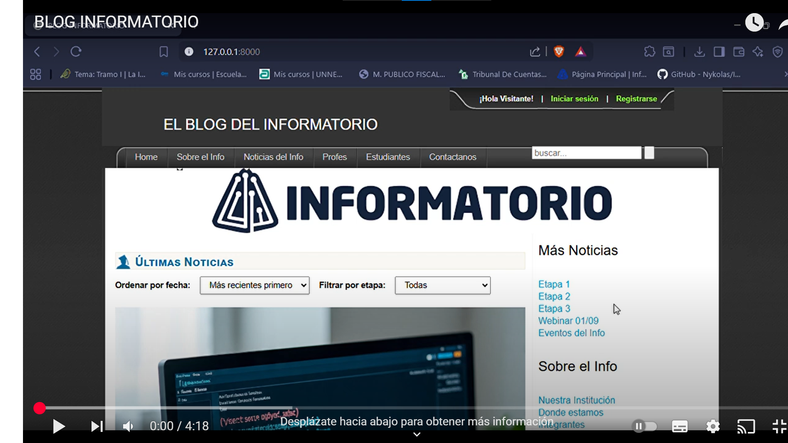

Pasteleria Delicias
Una tienda online destinada a la venta y comercialización de pasteles, donde se puede conocer un poco acerca de la pasteleria y contactarse con la misma por una consulta o reclamo. Las tecnologías utilizadas, en este proyecto fueron; HTML, CSS y JAVASCRIPT.
Ver Proyecto
Registro de Personas
Una pagina web en donde se encuentran perfiles de grandes personajes, junto a una pequeña descripción de su historia y cuales son sus profesiones. Las tecnologías utilizadas aqui fueron, HTML, CSS, JAVASCRIPT y tambien contiene un poco de Bootstrap. Lo realice junto a una compañera de estudio.
Ver Proyecto
Agenda Digital
Esta Agenda Digital es parte del proceso del curso del Bootcamp, siendo el ultimo trabajo realizado junto a compañeros del curso, las tecnologías que aplicamos; Bootstrap, React.js, Vue.js. A continuacion en este video se muestra como funciona el sitio. Aclaracion el video solo tiene musica de fondo.

El Blog del Informatorio
Es el proyecto final del curso de Desarrollo Web con Python, donde lo desarrolle de manera grupal con compañeros de la cursada. Poniendo como objetivo crear este blog de noticias para dar a conocer las actividades que se realizan dentro del Programa del Informatorio, contando quienes son los integrantes y quienes colaboran en este programa provincial. Las herramientas tecnologicas que utilizamos fueron; HTML, CSS, JAVASCRIPTS, PYTHON y DJANGO este ultimo como Framework y realizamos el deploy con PythonAnyWhere.